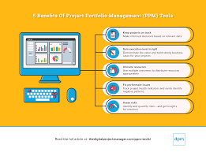
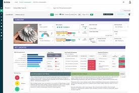

Director de Microsoft declara en juicio contra OpenAI estar "orgulloso" de temprana inversión
El director ejecutivo de Microsoft, Satya Nadella, que testificó este lunes en el juicio de Elon Musk contra OpenAI, dijo que estaba "muy orgulloso" de la rentable inversión temprana de su empresa en el
El director ejecutivo de Microsoft, Satya Nadella, que testificó este lunes en el juicio de Elon Musk contra OpenAI, dijo que estaba "muy orgulloso" de la rentable inversión temprana de su empresa en el gigante de la IA detrás de ChatGPT.
Musk, antiguo benefactor de OpenAI, afirma que Microsoft ayudó a sus creadores a traicionar su misión filantrópica y convertir la empresa en una máquina de hacer dinero.
Nadella declaró que la inversión de Microsoft, que ahora posee alrededor de una cuarta parte de OpenAI Group PBC, contribuyó a crear "una de las organizaciones sin fines de lucro más grandes y mejor financiadas del mundo".
La defensa de Musk afirmó que documentos internos de Microsoft demostraban que el gigante informático en realidad tenía la mira puesta en las ganancias, y no en ayudar a fomentar un servicio de IA filantrópico, después de haber visto cómo su inversión inicial de 13.000 millones de dólares se disparó hasta valer 92.000 millones cuatro años más tarde.
Otras Noticias
River ganó
En un partido lleno de goles e incidencias, el pase a los cuartos de final se definió por la pena máxima y el Millonario está en la siguiente fase.

Boca perdió
El conjunto que dirige Claudio Úbeda se quedó afuera del Torneo Apertura
Se lesionó Bareiro
Adam Bareiro se lesionó el sábado 9 de mayo de 2026 durante el partido de Boca contra Huracán por los octavos de final
